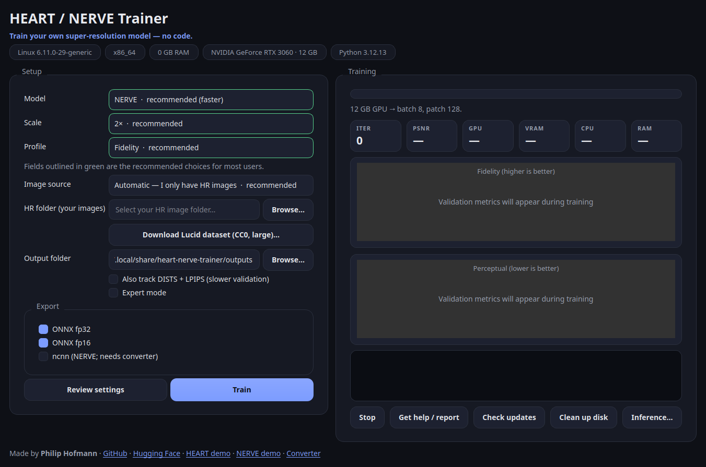

Super-resolution, without the terminal
Train your own
image upscaler, no code.
A friendly desktop app for training HEART and NERVE models. Pick a model and scale, point it at a folder of photos, press Train — then use the result anywhere.
Detected your OS — the matching button is highlighted. Builds are published on
Releases.
On Linux, unpack the archive and run HeartNerveTrainer/HeartNerveTrainer
(an AppImage is also attached when available).
- Windows + Linux
- MIT licensed
- Free CC0 training data
- GPU optional

Three steps to a model
-
1
Install
Double-click the installer. The app sets everything up in its own folder — your system is never touched.
-
2
Pick & point
Choose NERVE (fast) or HEART (higher quality), a scale, and a folder of high-res images. Safe defaults are pre-filled.
-
3
Train & export
Hit Train and watch live PSNR / SSIM / DISTS / LPIPS graphs. Get a deployable model when it's done.
What you get
Drop the exported files straight into chaiNNer, ComfyUI, or your own code.
.safetensorsPyTorch weights
.onnxfp32 & fp16
.ncnnNERVE, edge
Questions
Do I need a GPU?
It trains on CPU, but that's very slow. An NVIDIA GPU (even 6–12 GB) makes it practical. The app detects your hardware and picks safe settings.
NERVE or HEART — which should I pick?
NERVE is the recommended default: faster to train and to run, great for everyday use. HEART is the higher-quality tier for when you have time and VRAM.
Where does the training data come from?
Ships with a one-click download of the Lucid dataset — 100k CC0 image tiles, free for any use. Or point it at your own photos, no upload needed.
Is it free?
Yes. The app is MIT-licensed and built on the open-source traiNNer-redux harness.
What if something goes wrong?
The app copies a friendly, non-technical diagnostic report to your clipboard — paste it into any AI assistant or a forum and you'll get step-by-step help. Nothing is sent anywhere automatically.